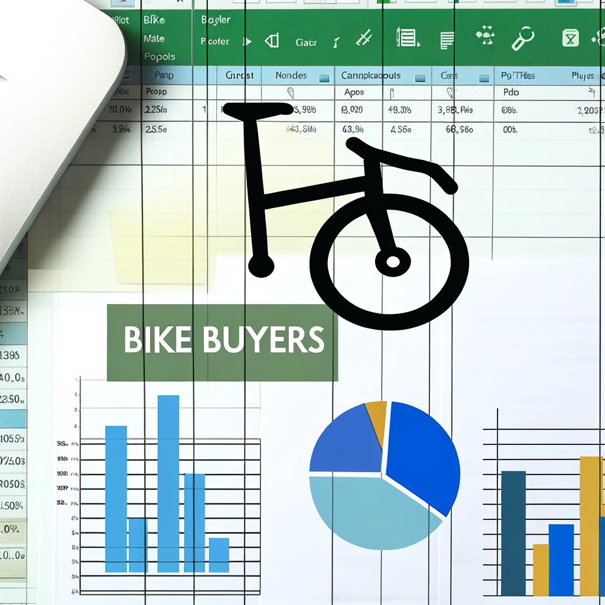
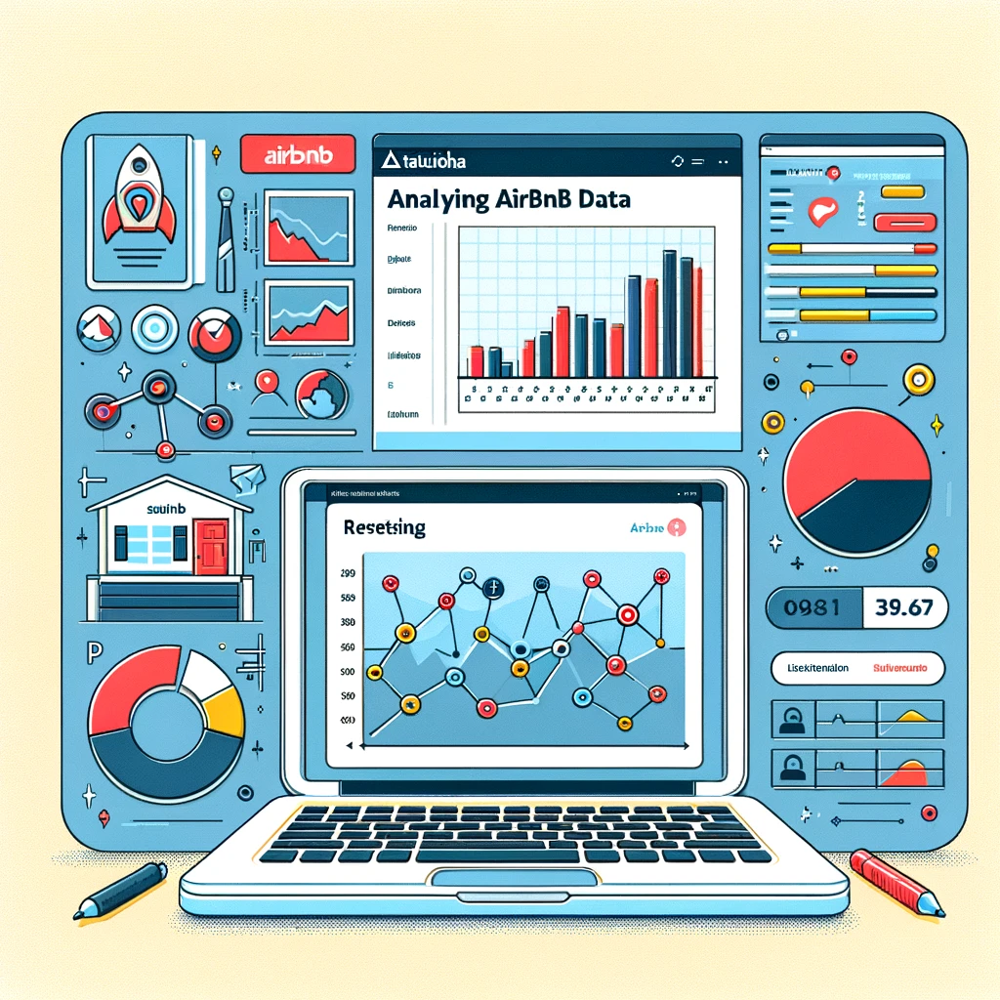

This project involved cleaning data from an Excel file on Nashville Housing. I used SQL to identify and correct inconsistencies, remove duplicates, and prepare the data for analysis. The cleaned dataset provides a reliable basis for further exploration and visualization.

This project involved analyzing COVID-19 vaccination and death rates. Using SQL, I cleaned and processed the data to identify trends and correlations, providing insights into the effectiveness of vaccination efforts.

This project involved analyzing bike buyers data. Using Excel, I cleaned and organized the dataset to categorize income brackets, identify trends, and prepare the data for visualization. Additionally, I used pivot tables and created an interactive dashboard to provide deeper insights.

This project involved analyzing Airbnb data using Tableau to identify key trends and insights about listings, pricing, and occupancy rates.
In this project, I used Power BI to analyze and visualize survey data from data professionals, highlighting key findings and trends in the industry.
This project involved scraping product data from Amazon using Python. The scraped data was then cleaned and analyzed to extract meaningful insights about product pricing, reviews, and ratings.
I developed a Python script to automate the sorting of files into designated folders based on their file types. This project demonstrates my ability to create efficient automation tools.
This project involved analyzing data on CS:GO players and teams to identify performance trends and key statistics. The analysis was conducted using Python and visualized with libraries like Matplotlib and Seaborn.
In this project, I analyzed data on the most played games on Steam. Using Python, I scraped and cleaned the data. After that, used Power BI to uncover trends and patterns in game popularity.